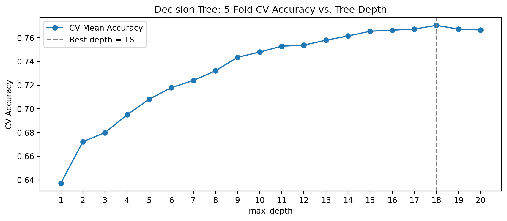
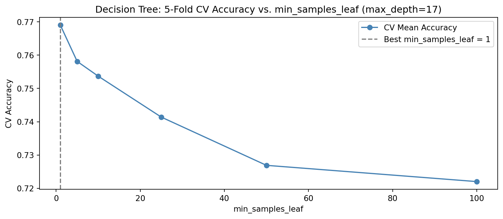

Download the lab template here and move to your eds232-labs repository.
Background
In this lab you’ll build and tune a decision tree to predict forest cover type from wilderness cartographic data. This is a multi-class classification problem used by the US Forest Service to map land cover without costly field surveys.
Dataset: UCI Forest Cover Type (id=31). 581,012 records from four wilderness areas in the Roosevelt National Forest, Colorado. Features include elevation, slope, hillshade, distance to water and roads, wilderness area, and soil type. Our response variable, Cover_Type, includes 7 different forest types: Spruce/Fir, Lodgepole Pine, Ponderosa Pine, Cottonwood/Willow, Aspen, Douglas-fir, Krummholz (encoded as integers from 1 to 7). More information on the data can be found here.
Step 1: Load and Explore the Data
Code
import pandas as pdimport numpy as npimport matplotlib.pyplot as pltfrom ucimlrepo import fetch_ucirepofrom sklearn.model_selection import train_test_split, cross_val_score, GridSearchCVfrom sklearn.tree import DecisionTreeClassifier, plot_treefrom sklearn.metrics import accuracy_score
Code
forest = fetch_ucirepo(id=31)df = pd.concat([forest.data.features, forest.data.targets], axis=1)print(f"Full dataset shape: {df.shape}")print()print("Cover type distribution (full dataset):")print(df['Cover_Type'].value_counts().sort_index())df.head()
Full dataset shape: (581012, 55)
Cover type distribution (full dataset):
Cover_Type
1 211840
2 283301
3 35754
4 2747
5 9493
6 17367
7 20510
Name: count, dtype: int64
Elevation
Aspect
Slope
Horizontal_Distance_To_Hydrology
Vertical_Distance_To_Hydrology
Horizontal_Distance_To_Roadways
Hillshade_9am
Hillshade_Noon
Hillshade_3pm
Horizontal_Distance_To_Fire_Points
...
Soil_Type35
Soil_Type36
Soil_Type37
Soil_Type38
Soil_Type39
Soil_Type40
Wilderness_Area2
Wilderness_Area3
Wilderness_Area4
Cover_Type
0
2596
51
3
258
0
510
221
232
148
6279
...
0
0
0
0
0
0
0
0
0
5
1
2590
56
2
212
-6
390
220
235
151
6225
...
0
0
0
0
0
0
0
0
0
5
2
2804
139
9
268
65
3180
234
238
135
6121
...
0
0
0
0
0
0
0
0
0
2
3
2785
155
18
242
118
3090
238
238
122
6211
...
0
0
0
0
0
0
0
0
0
2
4
2595
45
2
153
-1
391
220
234
150
6172
...
0
0
0
0
0
0
0
0
0
5
5 rows × 55 columns
Step 2: Preprocess
The Forest Cover Type dataset is already clean and fully numeric, meaning all features are encoded as integers. The 54 features include:
10 continuous: elevation, aspect, slope, hillshade indices, distances to hydrology, roadways, and fire points
44 binary: 4 wilderness area indicators and 40 soil type indicators
No encoding or scaling is needed. We will sample 30,000 rows to keep lab runtimes manageable.
Code
df_sample = df.sample(n=30_000, random_state=42)features = [c for c in df_sample.columns if c !='Cover_Type']X = df_sample[features]y = df_sample['Cover_Type']
Code
X_train, X_test, y_train, y_test = train_test_split(X, y, test_size=0.3,stratify=y, random_state=42)print(f"Training samples: {len(X_train):,} | Test samples: {len(X_test):,}")
Training samples: 21,000 | Test samples: 9,000
Step 3: Fit a Decision Tree
To start, we will fit a decision tree without specifying any hyperparameters.
Untuned tree depth: 35
Training accuracy: 1.000
Test accuracy: 0.780
Uh oh! Look at the difference between our test accuracy and our training accuracy. It looks like our model is overfitting! Let’s try tuning to prevent this.
Step 4: Tune max_depth with Cross-Validation
Rather than evaluating each depth on the held-out test set (which leaks information), we use 5-fold cross-validation on the training data. We will first tune max_depth, a hyperparameter which limits how many levels a tree can grow. Perform cross fold validation, iterating over a max depth from 1 to 20.
Best max_depth (5-fold CV): 18 (CV accuracy: 0.771)

Step 5: Tune min_samples_leaf with Cross-Validation
min_samples_leaf sets the minimum number of training samples required at any leaf node. Perform cross fold validation, iterating over the following numbers of minimum samples: 1, 5, 10, 25, 50, and 100.
Best min_samples_leaf (5-fold CV): 1 (CV accuracy: 0.771)

Discuss with a partner what it means to have a higher min_samples_leaf value.
Step 6: Joint Tuning with GridSearchCV
Tuning hyperparameters one at a time ignores their interactions. GridSearchCV evaluates every combination in a parameter grid using cross-validation, finding the jointly optimal settings. Use the max_depth values of 5, 10, 15, 16, 17,18, 19 20, the min_samples_leaf values of 1, 5, 10, and 25, and the criterion options of gini and entropy to find the best combination of parameters.
Best parameters: {'criterion': 'gini', 'max_depth': 18, 'min_samples_leaf': 1}
Test accuracy: 0.776
Does the best max_depth and min_samples_leaf from GridSearchCV match what you found by tuning it individually in Step 4? If not, why might joint tuning arrive at a different answer?
Step 7: Visualize the Best Tree
Create a visualization of your decision tree with a max_depth of 3 (for plotting purposes), and the values that your grid search found to be best for min_samples_leaf and criterion.
NoteReview the value counts of our y_train here
Code
print("Cover type distribution (training set):")print(y_train.value_counts().sort_index())
What feature appears at the root node (the very first split)? Does it make ecological sense that this feature is the most informative for separating forest cover types?
Look at the elevation threshold used at the root split (in meters). Rocky Mountain subalpine forests typically begin around 2,750–3,000m. Does the split value align with a meaningful ecological boundary?
Look at the observation below. What Forest Cover type would this observation be classified as with our tree above?